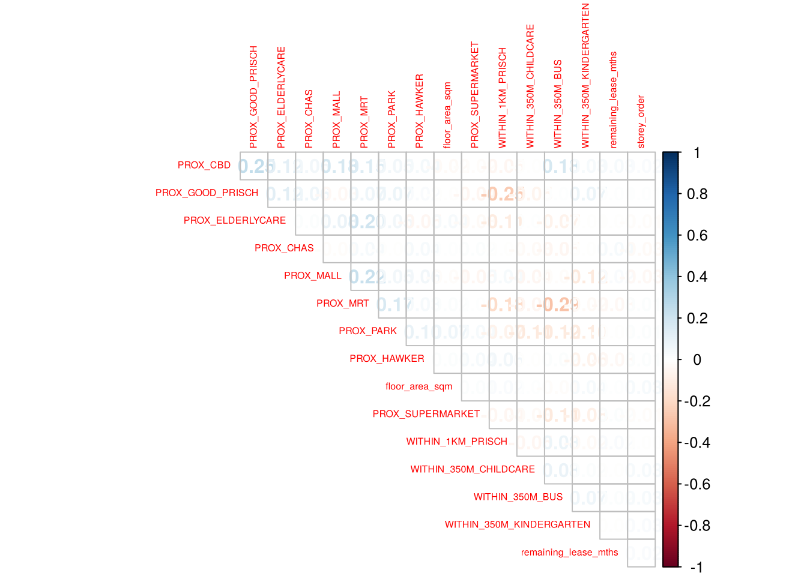
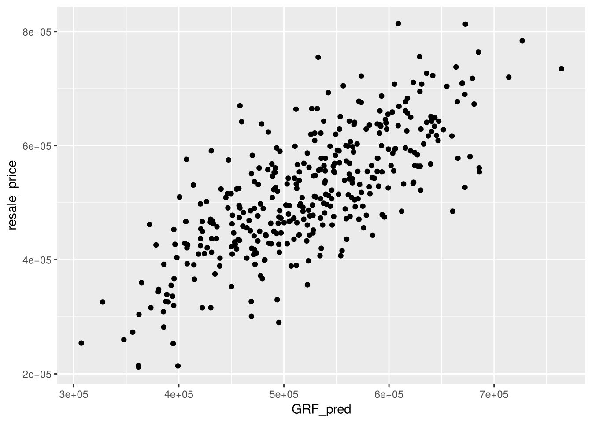

pacman::p_load(sf, spdep, GWmodel, SpatialML,
tmap, rsample, Metrics,
ranger, tidyverse)Hands-on_Ex13:Geographically Weighted Predictive Models
1 Overview
Predictive modelling uses statistical learning or machine learning techniques to predict outcomes. By and large, the event one wants to predict is in the future. However, a set of known outcome and predictors (also known as variables) will be used to calibrate the predictive models.
Geospatial predictive modelling is conceptually rooted in the principle that the occurrences of events being modeled are limited in distribution. When geographically referenced data are used, occurrences of events are neither uniform nor random in distribution over space. There are geospatial factors (infrastructure, sociocultural, topographic, etc.) that constrain and influence where the locations of events occur. Geospatial predictive modeling attempts to describe those constraints and influences by spatially correlating occurrences of historical geospatial locations with environmental factors that represent those constraints and influences.
1.1 Learning outcome
In this in-class exercise, you will learn how to build predictive model by using geographical random forest method. By the end of this hands-on exercise, you will acquire the skills of:
- preparing training and test data sets by using appropriate data sampling methods,
- calibrating predictive models by using both geospatial statistical learning and machine learning methods,
- comparing and selecting the best model for predicting the future outcome,
- predicting the future outcomes by using the best model calibrated.
2 The Data
ImportantNote on the data used in this exercise
The prepared data file (mdata.rds) was not provided. This exercise therefore uses a simulated data set with the same structure: 1,500 point locations in populated HDB subzones and the same 17 variables. Distance to the CBD, to the nearest MRT/LRT station and bus stops within 350 m are computed from real LTA locations; the other facilities and the resale prices are simulated. The code and workflow follow the hands-on exercise, but the numbers are illustrative and do not describe the real HDB resale market.
- Aspatial dataset:
- HDB Resale data: a list of HDB resale transacted prices in Singapore from Jan 2017 onwards. It is in csv format which can be downloaded from data.gov.sg.
- Geospatial dataset:
- MP14_SUBZONE_WEB_PL: a polygon feature data providing information of URA 2014 Master Plan Planning Subzone boundary data. It is in ESRI shapefile format. This data set was also downloaded from Data.gov.sg
- Locational factors with geographic coordinates:
- Downloaded from Data.gov.sg.
- Eldercare data is a list of eldercare in Singapore. It is in shapefile format.
- Hawker Centre data is a list of hawker centres in Singapore. It is in geojson format.
- Parks data is a list of parks in Singapore. It is in geojson format.
- Supermarket data is a list of supermarkets in Singapore. It is in geojson format.
- CHAS clinics data is a list of CHAS clinics in Singapore. It is in geojson format.
- Childcare service data is a list of childcare services in Singapore. It is in geojson format.
- Kindergartens data is a list of kindergartens in Singapore. It is in geojson format.
- Downloaded from Datamall.lta.gov.sg.
- MRT data is a list of MRT/LRT stations in Singapore with the station names and codes. It is in shapefile format.
- Bus stops data is a list of bus stops in Singapore. It is in shapefile format.
- Downloaded from Data.gov.sg.
- Locational factors without geographic coordinates:
- Downloaded from Data.gov.sg.
- Primary school data is extracted from the list on General information of schools from data.gov portal. It is in csv format.
- Retrieved/Scraped from other sources
- CBD coordinates obtained from Google.
- Shopping malls data is a list of Shopping malls in Singapore obtained from Wikipedia.
- Good primary schools is a list of primary schools that are ordered in ranking in terms of popularity and this can be found at Local Salary Forum.
- Downloaded from Data.gov.sg.
3 Installing and Loading R packages
This code chunk performs 3 tasks:
- A list called packages will be created and will consists of all the R packages required to accomplish this exercise.
- Check if R packages on package have been installed in R and if not, they will be installed.
- After all the R packages have been installed, they will be loaded.
4 Preparing Data
4.1 Reading data file to rds
Reading the input data sets. It is in simple feature data frame.
mdata <- read_rds("data/rawdata/mdata.rds")4.2 Checking of overlapping point
Warning
When using GWmodel to calibrate explanatory or predictive models, it is very important to ensure that there are no overlapping point features
The code chunk below is used to check if there are overlapping point features.
overlapping_points <- mdata %>%
mutate(overlap = lengths(st_equals(., .)) > 1)4.3 Spatial jitter
In the code code chunk below, st_jitter() of sf package is used to move the point features by 1m to avoid overlapping point features.
mdata_jittered <- mdata %>%
st_jitter(amount = 1)4.4 Data Sampling
The entire data are split into training and test data sets with 65% and 35% respectively by using initial_split() of rsample package. rsample is one of the package of tigymodels.
set.seed(1234)
resale_split <- initial_split(mdata_jittered,
prop = 7.5/10,)
train_data <- training(resale_split)
test_data <- testing(resale_split)write_rds(train_data, "data/model/train_data.rds")
write_rds(test_data, "data/model/test_data.rds")5 Computing Correlation Matrix
Before loading the predictors into a predictive model, it is always a good practice to use correlation matrix to examine if there is sign of multicolinearity.
mdata_nogeo <- mdata %>%
st_drop_geometry()
corrplot::corrplot(cor(mdata_nogeo[, 2:17]),
diag = FALSE,
order = "AOE",
tl.pos = "td",
tl.cex = 0.5,
method = "number",
type = "upper")
Note
The correlation matrix above shows that all the correlation values are below 0.8. Hence, there is no sign of multicolinearity.
6 Retriving the Stored Data
train_data <- read_rds("data/model/train_data.rds")
test_data <- read_rds("data/model/test_data.rds")7 Building a non-spatial multiple linear regression
price_mlr <- lm(resale_price ~ floor_area_sqm +
storey_order + remaining_lease_mths +
PROX_CBD + PROX_ELDERLYCARE + PROX_HAWKER +
PROX_MRT + PROX_PARK + PROX_MALL +
PROX_SUPERMARKET + WITHIN_350M_KINDERGARTEN +
WITHIN_350M_CHILDCARE + WITHIN_350M_BUS +
WITHIN_1KM_PRISCH,
data=train_data)
summary(price_mlr)
Call:
lm(formula = resale_price ~ floor_area_sqm + storey_order + remaining_lease_mths +
PROX_CBD + PROX_ELDERLYCARE + PROX_HAWKER + PROX_MRT + PROX_PARK +
PROX_MALL + PROX_SUPERMARKET + WITHIN_350M_KINDERGARTEN +
WITHIN_350M_CHILDCARE + WITHIN_350M_BUS + WITHIN_1KM_PRISCH,
data = train_data)
Residuals:
Min 1Q Median 3Q Max
-148607 -30610 3428 29774 115299
Coefficients:
Estimate Std. Error t value Pr(>|t|)
(Intercept) 132898.19 13763.67 9.656 < 2e-16 ***
floor_area_sqm 3512.76 108.31 32.431 < 2e-16 ***
storey_order 8879.31 325.07 27.315 < 2e-16 ***
remaining_lease_mths 276.31 7.31 37.798 < 2e-16 ***
PROX_CBD -17240.41 321.23 -53.671 < 2e-16 ***
PROX_ELDERLYCARE -3621.64 2705.68 -1.339 0.18100
PROX_HAWKER 4623.24 2625.71 1.761 0.07855 .
PROX_MRT -40361.12 3175.78 -12.709 < 2e-16 ***
PROX_PARK -6615.95 4898.77 -1.351 0.17712
PROX_MALL -17678.47 3349.62 -5.278 1.57e-07 ***
PROX_SUPERMARKET 13776.97 6404.48 2.151 0.03168 *
WITHIN_350M_KINDERGARTEN -320.92 1683.19 -0.191 0.84883
WITHIN_350M_CHILDCARE -3602.19 937.85 -3.841 0.00013 ***
WITHIN_350M_BUS 2823.27 407.09 6.935 6.87e-12 ***
WITHIN_1KM_PRISCH 2028.21 940.18 2.157 0.03120 *
---
Signif. codes: 0 '***' 0.001 '**' 0.01 '*' 0.05 '.' 0.1 ' ' 1
Residual standard error: 43730 on 1110 degrees of freedom
Multiple R-squared: 0.8677, Adjusted R-squared: 0.866
F-statistic: 520.1 on 14 and 1110 DF, p-value: < 2.2e-16write_rds(price_mlr, "data/model/price_mlr.rds" )8 gwr predictive method
In this section, you will learn how to calibrate a model to predict HDB resale price by using geographically weighted regression method of GWmodel package.
8.1 Computing adaptive bandwidth
Firstly, bw.gwr() of GWmodel package will be used to determine the optimal bandwidth to be used.
Note
The code chunk below is used to determine adaptive bandwidth and CV method is used to determine the optimal bandwidth.
bw_adaptive <- bw.gwr(
formula = resale_price ~ floor_area_sqm +
storey_order + remaining_lease_mths +
PROX_CBD + PROX_ELDERLYCARE + PROX_HAWKER +
PROX_MRT + PROX_PARK + PROX_MALL +
PROX_SUPERMARKET + WITHIN_350M_KINDERGARTEN +
WITHIN_350M_CHILDCARE + WITHIN_350M_BUS +
WITHIN_1KM_PRISCH,
data=train_data,
approach="CV",
kernel="gaussian",
adaptive=TRUE,
longlat=FALSE)Adaptive bandwidth: 702 CV score: 1.851038e+12
Adaptive bandwidth: 442 CV score: 1.700007e+12
Adaptive bandwidth: 279 CV score: 1.622075e+12
Adaptive bandwidth: 181 CV score: 1.579385e+12
Adaptive bandwidth: 117 CV score: 1.577065e+12
Adaptive bandwidth: 81 CV score: 1.591052e+12
Adaptive bandwidth: 143 CV score: 1.574989e+12
Adaptive bandwidth: 155 CV score: 1.576056e+12
Adaptive bandwidth: 131 CV score: 1.574937e+12
Adaptive bandwidth: 128 CV score: 1.574705e+12
Adaptive bandwidth: 122 CV score: 1.575722e+12
Adaptive bandwidth: 128 CV score: 1.574705e+12 The result shows that 48 neighbour points will be the optimal bandwidth to be used if adaptive bandwidth is used for this data set.
Tip
This is a computational intensity and time consuming process. It is wiser to save the output as an rds file for future used without having to re-run the process again.
write_rds(bw_adaptive, "data/model/bw_adaptive.rds")8.2 Constructing the adaptive bandwidth gwr model
First, let us call the save bandwidth by using the code chunk below.
bw_adaptive <- read_rds(
"data/model/bw_adaptive.rds")Now, we can go ahead to calibrate the gwr-based hedonic pricing model by using adaptive bandwidth and Gaussian kernel as shown in the code chunk below.
gwr_adaptive <- gwr.basic(
formula = resale_price ~ floor_area_sqm +
storey_order + remaining_lease_mths +
PROX_CBD + PROX_ELDERLYCARE +
PROX_HAWKER + PROX_MRT + PROX_PARK +
PROX_MALL + PROX_SUPERMARKET +
WITHIN_350M_KINDERGARTEN +
WITHIN_350M_CHILDCARE +
WITHIN_350M_BUS + WITHIN_1KM_PRISCH,
data=train_data,
bw=bw_adaptive,
kernel = 'gaussian',
adaptive=TRUE,
longlat = FALSE)
Tip
This is a computational intensity and time consuming process. It is wiser to save the output as an rds file for future used without having to re-run the process again.
write_rds(gwr_adaptive,
"data/model/gwr_adaptive.rds")8.3 Retrieve gwr output object
The code chunk below will be used to retrieve the save gwr model object.
gwr_adaptive <- read_rds("data/model/gwr_adaptive.rds")The code below can be used to display the model output.
gwr_adaptive ***********************************************************************
* Package GWmodel *
***********************************************************************
Program starts at: 2026-11-08 15:11:26.776318
Call:
gwr.basic(formula = resale_price ~ floor_area_sqm + storey_order +
remaining_lease_mths + PROX_CBD + PROX_ELDERLYCARE + PROX_HAWKER +
PROX_MRT + PROX_PARK + PROX_MALL + PROX_SUPERMARKET + WITHIN_350M_KINDERGARTEN +
WITHIN_350M_CHILDCARE + WITHIN_350M_BUS + WITHIN_1KM_PRISCH,
data = train_data, bw = bw_adaptive, kernel = "gaussian",
adaptive = TRUE, longlat = FALSE)
Dependent (y) variable: resale_price
Independent variables: floor_area_sqm storey_order remaining_lease_mths PROX_CBD PROX_ELDERLYCARE PROX_HAWKER PROX_MRT PROX_PARK PROX_MALL PROX_SUPERMARKET WITHIN_350M_KINDERGARTEN WITHIN_350M_CHILDCARE WITHIN_350M_BUS WITHIN_1KM_PRISCH
Number of data points: 1125
***********************************************************************
* Results of Global Regression *
***********************************************************************
Call:
lm(formula = formula, data = data)
Residuals:
Min 1Q Median 3Q Max
-148607 -30610 3428 29774 115299
Coefficients:
Estimate Std. Error t value Pr(>|t|)
(Intercept) 132898.19 13763.67 9.656 < 2e-16 ***
floor_area_sqm 3512.76 108.31 32.431 < 2e-16 ***
storey_order 8879.31 325.07 27.315 < 2e-16 ***
remaining_lease_mths 276.31 7.31 37.798 < 2e-16 ***
PROX_CBD -17240.41 321.23 -53.671 < 2e-16 ***
PROX_ELDERLYCARE -3621.64 2705.68 -1.339 0.18100
PROX_HAWKER 4623.24 2625.71 1.761 0.07855 .
PROX_MRT -40361.12 3175.78 -12.709 < 2e-16 ***
PROX_PARK -6615.95 4898.77 -1.351 0.17712
PROX_MALL -17678.47 3349.62 -5.278 1.57e-07 ***
PROX_SUPERMARKET 13776.97 6404.48 2.151 0.03168 *
WITHIN_350M_KINDERGARTEN -320.92 1683.19 -0.191 0.84883
WITHIN_350M_CHILDCARE -3602.19 937.85 -3.841 0.00013 ***
WITHIN_350M_BUS 2823.27 407.09 6.935 6.87e-12 ***
WITHIN_1KM_PRISCH 2028.21 940.18 2.157 0.03120 *
---Significance stars
Signif. codes: 0 '***' 0.001 '**' 0.01 '*' 0.05 '.' 0.1 ' ' 1
Residual standard error: 43730 on 1110 degrees of freedom
Multiple R-squared: 0.8677
Adjusted R-squared: 0.866
F-statistic: 520.1 on 14 and 1110 DF, p-value: < 2.2e-16
***Extra Diagnostic information
Residual sum of squares: 2.122331e+12
Sigma(hat): 43472.7
AIC: 27252.36
AICc: 27252.85
BIC: 26320.18
***********************************************************************
* Results of Geographically Weighted Regression *
***********************************************************************
*********************Model calibration information*********************
Kernel function: gaussian
Adaptive bandwidth: 128 (number of nearest neighbours)
Regression points: the same locations as observations are used.
Distance metric: Euclidean distance metric is used.
****************Summary of GWR coefficient estimates:******************
Min. 1st Qu. Median 3rd Qu. Max.
Intercept 95895.33 142380.98 153964.99 170225.19 208839.916
floor_area_sqm 3326.49 3441.48 3509.88 3587.18 3707.435
storey_order 8157.79 8727.99 9051.44 9335.32 9925.795
remaining_lease_mths 256.12 268.67 272.71 276.21 287.406
PROX_CBD -24640.47 -20573.15 -19234.59 -15951.12 -15108.287
PROX_ELDERLYCARE -8786.57 -4130.85 -2903.33 -676.45 4913.468
PROX_HAWKER -11742.61 -8809.81 -6690.88 -3575.88 2524.146
PROX_MRT -51340.01 -44910.95 -42360.02 -38486.42 -29365.255
PROX_PARK -13205.60 -7969.03 -2644.63 1724.31 13090.796
PROX_MALL -27057.99 -21878.69 -17218.53 -14124.82 -10587.688
PROX_SUPERMARKET -8262.28 -165.88 3271.99 14515.03 23144.469
WITHIN_350M_KINDERGARTEN -6267.19 -1415.95 -6.77 852.39 2905.394
WITHIN_350M_CHILDCARE -3460.01 -2294.91 -1872.57 -1321.58 -65.088
WITHIN_350M_BUS 1585.14 2165.86 2361.07 2798.82 4089.345
WITHIN_1KM_PRISCH -1429.85 386.60 1626.09 4823.07 5901.823
************************Diagnostic information*************************
Number of data points: 1125
Effective number of parameters (2trace(S) - trace(S'S)): 103.5231
Effective degrees of freedom (n-2trace(S) + trace(S'S)): 1021.477
AICc (GWR book, Fotheringham, et al. 2002, p. 61, eq 2.33): 26889.29
AIC (GWR book, Fotheringham, et al. 2002,GWR p. 96, eq. 4.22): 26799.09
BIC (GWR book, Fotheringham, et al. 2002,GWR p. 61, eq. 2.34): 26135.4
Residual sum of squares: 1.363427e+12
R-square value: 0.9150162
Adjusted R-square value: 0.9063949
***********************************************************************
Program stops at: 2026-11-08 15:11:27.295767 8.4 Computing adaptive bandwidth for the test data
gwr_bw_test_adaptive <- bw.gwr(
formula = resale_price ~ floor_area_sqm +
storey_order + remaining_lease_mths +
PROX_CBD + PROX_ELDERLYCARE + PROX_HAWKER +
PROX_MRT + PROX_PARK + PROX_MALL +
PROX_SUPERMARKET + WITHIN_350M_KINDERGARTEN +
WITHIN_350M_CHILDCARE + WITHIN_350M_BUS +
WITHIN_1KM_PRISCH,
data=test_data,
approach="CV",
kernel="gaussian",
adaptive=TRUE,
longlat=FALSE)Adaptive bandwidth: 239 CV score: 611479055785
Adaptive bandwidth: 156 CV score: 568336492479
Adaptive bandwidth: 103 CV score: 550276186742
Adaptive bandwidth: 72 CV score: 538041672992
Adaptive bandwidth: 51 CV score: 546100522710
Adaptive bandwidth: 83 CV score: 5.42232e+11
Adaptive bandwidth: 63 CV score: 539245776383
Adaptive bandwidth: 75 CV score: 538039276900
Adaptive bandwidth: 80 CV score: 540893407296
Adaptive bandwidth: 75 CV score: 538039276900 write_rds(gwr_bw_test_adaptive,
"data/model/gwr_bw_test_adaptive.rds")8.5 Computing predicted values of the test data
train_data_sp <- as(train_data, "Spatial")
test_data_sp <- as(test_data, "Spatial")gwr_pred <- gwr.predict(
formula = resale_price ~ floor_area_sqm +
storey_order + remaining_lease_mths +
PROX_CBD + PROX_ELDERLYCARE + PROX_HAWKER +
PROX_MRT + PROX_PARK + PROX_MALL +
PROX_SUPERMARKET + WITHIN_350M_KINDERGARTEN +
WITHIN_350M_CHILDCARE + WITHIN_350M_BUS +
WITHIN_1KM_PRISCH,
data=train_data,
predictdata = test_data,
bw=200,
kernel = 'gaussian',
adaptive=TRUE,
longlat = FALSE)write_rds(gwr_pred,
"data/model/gwr_pred.rds")9 Calibrating Random Forest Model
In this section, you will learn how to calibrate a model to predict HDB resale price by using random forest function of ranger package.
9.1 Preparing coordinates data
The code chunk below extract the x,y coordinates of the full, training and test data sets.
coords <- st_coordinates(mdata)
coords_train <- st_coordinates(train_data)
coords_test <- st_coordinates(test_data)Before continue, we write all the output into rds for future used.
coords_train <- write_rds(
coords_train,
"data/model/coords_train.rds" )
coords_test <- write_rds(
coords_test,
"data/model/coords_test.rds" )9.2 Droping geometry field
First, we will drop geometry column of the sf data.frame by using st_drop_geometry() of sf package.
train_data_nogeom <- train_data %>%
st_drop_geometry()
test_data_nogeom <- test_data %>%
st_drop_geometry()9.3 Calibrating a non-spatial random forest model
set.seed(1234)
rf <- ranger(
formula = resale_price ~ floor_area_sqm +
storey_order + remaining_lease_mths +
PROX_CBD + PROX_ELDERLYCARE +
PROX_HAWKER + PROX_MRT + PROX_PARK +
PROX_MALL + PROX_SUPERMARKET +
WITHIN_350M_KINDERGARTEN +
WITHIN_350M_CHILDCARE +
WITHIN_350M_BUS +
WITHIN_1KM_PRISCH,
data=train_data_nogeom)
rfRanger result
Call:
ranger(formula = resale_price ~ floor_area_sqm + storey_order + remaining_lease_mths + PROX_CBD + PROX_ELDERLYCARE + PROX_HAWKER + PROX_MRT + PROX_PARK + PROX_MALL + PROX_SUPERMARKET + WITHIN_350M_KINDERGARTEN + WITHIN_350M_CHILDCARE + WITHIN_350M_BUS + WITHIN_1KM_PRISCH, data = train_data_nogeom)
Type: Regression
Number of trees: 500
Sample size: 1125
Number of independent variables: 14
Mtry: 3
Target node size: 5
Variable importance mode: none
Splitrule: variance
OOB prediction error (MSE): 3209738048
R squared (OOB): 0.7751254 write_rds(rf, "data/model/rf.rds")10 Calibrating Geographical Weighted Random Forest Model
In this section, you will learn how to calibrate a model to predict HDB resale price by using grf() of SpatialML package.
10.1 Calibrating using training data
The code chunk below calibrate a geographic ranform forest model by using grf() of SpatialML package.
set.seed(1234)
gwRF_adaptive <- grf(
formula = resale_price ~ floor_area_sqm +
storey_order + remaining_lease_mths +
PROX_CBD + PROX_ELDERLYCARE +
PROX_HAWKER + PROX_MRT + PROX_PARK +
PROX_MALL + PROX_SUPERMARKET +
WITHIN_350M_KINDERGARTEN +
WITHIN_350M_CHILDCARE +
WITHIN_350M_BUS + WITHIN_1KM_PRISCH,
dframe=train_data_nogeom,
bw=40,
kernel="adaptive",
coords=coords_train)
Number of Observations: 1125Number of Independent Variables: 14Kernel: Adaptive
Neighbours: 40
--------------- Global ML Model Summary ---------------Ranger result
Call:
ranger::ranger(formula = f, data = dframe, num.trees = ntree, mtry = mtry, importance = importance, num.threads = nthreads, ...)
Type: Regression
Number of trees: 500
Sample size: 1125
Number of independent variables: 14
Mtry: 4
Target node size: 5
Variable importance mode: impurity
Splitrule: variance
OOB prediction error (MSE): 2896245655
R squared (OOB): 0.7970887
Importance: floor_area_sqm storey_order remaining_lease_mths
1.962292e+12 1.386215e+12 2.544397e+12
PROX_CBD PROX_ELDERLYCARE PROX_HAWKER
5.676332e+12 4.173334e+11 3.755383e+11
PROX_MRT PROX_PARK PROX_MALL
1.083057e+12 4.024524e+11 6.671645e+11
PROX_SUPERMARKET WITHIN_350M_KINDERGARTEN WITHIN_350M_CHILDCARE
3.701342e+11 8.752345e+10 1.684691e+11
WITHIN_350M_BUS WITHIN_1KM_PRISCH
3.119361e+11 2.796942e+11
Mean Square Error (Not OOB): 518788339.744R-squared (Not OOB) %: 96.362AIC (Not OOB): 22605.382AICc (Not OOB): 22605.815
--------------- Local Model Summary ---------------
Residuals OOB: Min. 1st Qu. Median Mean 3rd Qu. Max.
-261232.7 -49154.2 2365.2 -991.7 49071.1 208063.5
Residuals Predicted (Not OOB): Min. 1st Qu. Median Mean 3rd Qu. Max.
-51569.70 -4076.13 104.00 22.02 3785.23 39842.73
Local Variable Importance: Min Max Mean StD
floor_area_sqm 5750258995 136008480289 44012918308 24542289532
storey_order 4517875664 133760648865 32229581408 20003986667
remaining_lease_mths 6897851862 174431519377 55142770880 28327007144
PROX_CBD 4641223710 123388535747 24282053052 19254027740
PROX_ELDERLYCARE 2779316626 52395471121 15247504183 7060649589
PROX_HAWKER 4823230206 77226997186 19511288082 11265370888
PROX_MRT 2281586955 113122070102 20703678346 13701933087
PROX_PARK 3295742563 58729744266 16275397707 8607050456
PROX_MALL 3364607243 89614927774 17865357336 9550758893
PROX_SUPERMARKET 3095625363 97106720524 17023253940 11380057770
WITHIN_350M_KINDERGARTEN 245591920 34036353730 4304145783 4095413330
WITHIN_350M_CHILDCARE 1501084393 60171876183 7840494532 5812357081
WITHIN_350M_BUS 1795983065 65773879909 12198326576 8265787360
WITHIN_1KM_PRISCH 313235772 54505563357 6340204069 6428621975
Mean squared error (OOB): 5225484737.355R-squared (OOB) %: 63.358AIC (OOB): 25203.915AICc (OOB): 25204.348Mean squared error Predicted (Not OOB): 65348557.948R-squared Predicted (Not OOB) %: 99.542AIC Predicted (Not OOB): 20274.652AICc Predicted (Not OOB): 20275.084
Calculation time (in seconds): 30.3567write_rds(gwRF_adaptive, "data/model/gwRF_adaptive.rds")
Tip
This is a computational intensity and time consuming process. It is wiser to save the output as an rds file for future used without having to re-run the process again.
The code chunk below can be used to retrieve the save model in future.
gwRF_adaptive <- read_rds("data/model/gwRF_adaptive.rds")10.2 Predicting by using test data
10.2.1 Preparing the test data
The code chunk below will be used to combine the test data with its corresponding coordinates data.
test_data_nogeom <- cbind(
test_data, coords_test) %>%
st_drop_geometry()10.2.2 Predicting with test data
Next, predict.grf() of spatialML package will be used to predict the resale value by using the test data and gwRF_adaptive model calibrated earlier.
gwRF_pred <- predict(gwRF_adaptive,
test_data_nogeom,
x.var.name="X",
y.var.name="Y",
local.w=1,
global.w=0)GRF_pred <- write_rds(gwRF_pred, "data/model/GRF_pred.rds")10.2.3 Converting the predicting output into a data frame
The output of the predict.grf() is a vector of predicted values. It is wiser to convert it into a data frame for further visualisation and analysis.
GRF_pred <- read_rds(
"data/model/GRF_pred.rds")
GRF_pred_df <- as.data.frame(GRF_pred)In the code chunk below, cbind() is used to append the predicted values onto test_datathe
test_data_p <- cbind(
test_data, GRF_pred_df) %>%
select(resale_price, GRF_pred)write_rds(test_data_p,
"data/model/test_data_p.rds")10.3 Calculating Root Mean Square Error
The root mean square error (RMSE) allows us to measure how far predicted values are from observed values in a regression analysis. In the code chunk below, rmse() of Metrics package is used to compute the RMSE.
rmse(test_data_p$resale_price,
test_data_p$GRF_pred)[1] 71965.1210.4 Visualising the predicted values
Alternatively, scatterplot can be used to visualise the actual resale price and the predicted resale price by using the code chunk below.
ggplot(data = test_data_p,
aes(x = GRF_pred,
y = resale_price)) +
geom_point()
Note
A better predictive model should have the scatter point close to the diagonal line. The scatter plot can be also used to detect if any outliers in the model.